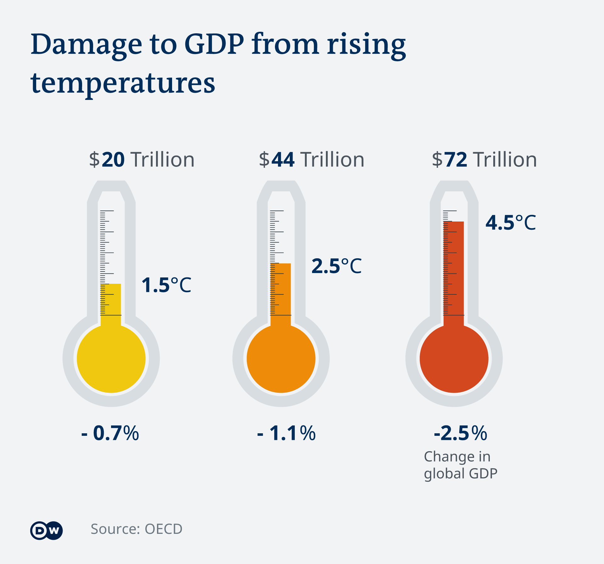
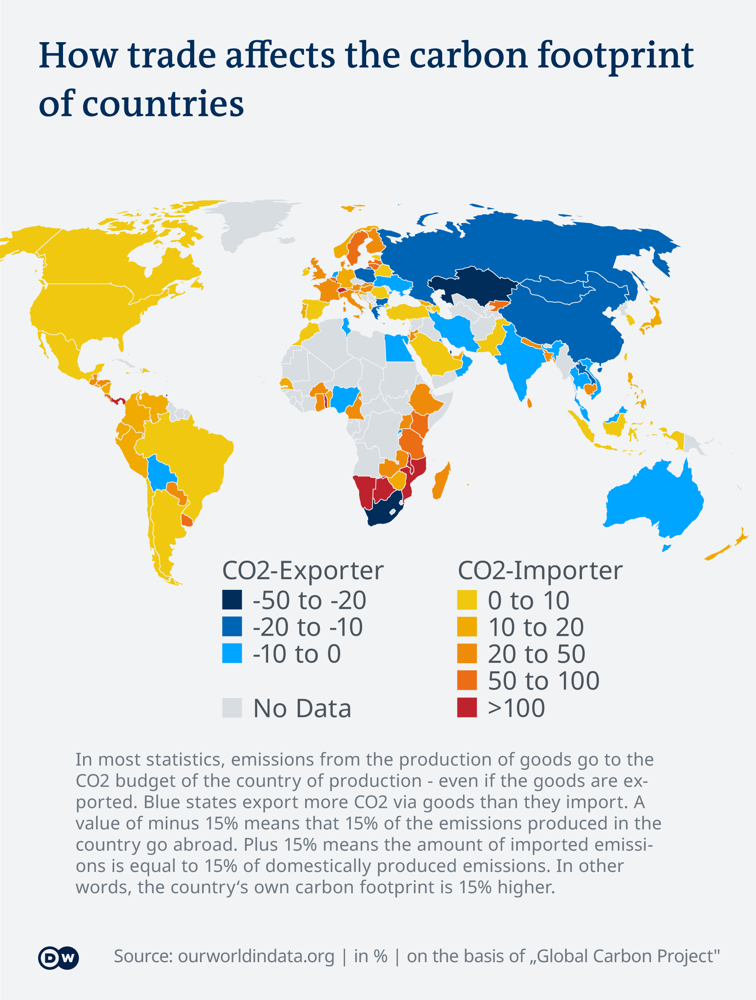

44 Economic Regulation
44.1 Climate protection impact on economic growth
Mudge
(This article is part of a series in which DW is debunking myths surrounding climate change. Read also: Part 1 — Is global warming merely a natural cycle? Part 2 — Is half a degree of warming really such a big deal? Part 3 — Is China the main climate change culprit? Part 4 — Climate protection: Can I make a difference? )
The first major environmental protection rules hark back to the 1970s. Since then, a debate has raged about their potentially damaging impact on economic growth and competitiveness. One train of thought (Dechezleprêtre (2017)) says countries that adhere less stringently to environmental policies have a production and trade advantage over those nations that are taking climate action measures to reduce emissions. The concern in those countries is that their own emission-heavy industries will be put at a competitive disadvantage.
This so-called pollution haven hypothesis predicts that if competing companies diverge only regarding the severity of environmental regulations they face, then those that are bound by relatively stricter measures will lose competitiveness.
On the other hand, the so-called Porter hypothesis concludes that more stringent climate rules should encourage investment in developing new pollution-saving technologies. If these technologies lead to energy savings, they may help in turn to offset some of the climate protection costs. Then, there is also the issue of how much it might cost if we fail to mitigate climate impacts.
Is GDP the only valid indicator?
At first glance, using GDP as a measurement tool is an obvious choice to provide a cost-benefit analysis. The question is to what extent it provides an adequate measure of growth and prosperity.
“It is the most developed indicator. I wouldn’t say that we should move away from that, but many of these damages that are associated with climate change are not internalized. This means that we as a global society will probably have costs due to lost biodiversity, for example, which are not directly reflected in the GDP,” Wilfried Rickels, director of the Global Commons and Climate Research Center at the Kiel Institute for the World Economy, told DW.

Figure: From OECD - Obviously this is once again Nordhaus unvalid calculations (DH)
Environmental protection itself contributes to economic growth
As modern economies move toward a so-called resource-efficient and circular economy (RE-CE), there are concerns that — in the short term, at least — jobs will be lost across various sectors of the economy and that job creation will be minimal. However, an OECD report notes that it is important to distinguish between different sectors.
Most jobs over the next two decades are projected to be created within the construction industry, and renewable power generation and services; while manufacturing sectors, agriculture, food production and fossil-fuel based power are expected to record job losses.
The overriding question is how to balance economic growth with cutting carbon emissions, and ultimately, achieving climate neutrality. At this year’s World Economic Forum in Davos, Johan Rockström, director of the Potsdam Institute for Climate Impact Research, pointed to that contradiction. “It’s difficult to see if the current GDP-based model of economic growth can go hand in hand with rapid cutting of emissions,” he said.

Mudge (2021) Does climate protection stifle economic growth? (Deutsche Welle)
Dechezleprêtre
Ever since the first major environmental regulations were enacted in the 1970s, there has been much debate about their potential impacts on the competitiveness of affected firms. Businesses and policy makers fear that in a world that is increasingly characterized by the integration of trade and capital flows, large asymmetries in the stringency of environmental policies could shift pollution-intensive production capacity toward countries or regions with less stringent regula- tion, altering the spatial distribution of industrial production and the subsequent international trade flows. This has caused concern, particularly among countries that are leading the action against climate change, because their efforts to achieve deep emission reductions could put their own pollution-intensive producers at a competitive disadvantage in the global economy.
There are two different views in the environmental economics literature on the effects of asymmetric policies on the performance of companies competing in the same market: the pollution haven hypothesis and the Porter hypothesis.
The pollution haven hypothesis, which is based on trade theory, predicts that more stringent environmental policies will increase compliance costs and, over time, shift pollution-intensive production toward low abatement cost regions, creating pollution havens and causing policy-induced pollution leakage. This is a particularly troubling problem for global pollutants such as carbon dioxide, because it means that on top of the economic impacts on domestic firms, abatement efforts will be offset to some extent by increasing emissions in other regions.
In contrast, the Porter hypothesis (Porter and van der Linde (1995) Toward a new conception of the environment–competitiveness relationship. Journal of Economic Perspectives 9(4):97–118 ) argues that more stringent environmental policies can actually have a net positive effect on the competitiveness of regulated firms because such policies promote cost-cutting efficiency improvements, which in turn reduce or completely offset regulatory costs, and foster innovation in new technologies that may help firms achieve international technological leadership and expand market share.
Some 20 years ago, in their review of the literature on the competitiveness impacts of envi- ronmental regulation in the United States, Jaffe et al. (1995) concluded that “there is relatively little evidence to support the hypothesis that environmental regulations have had a large adverse effect on competitiveness.” Since then, through hundreds of studies that have used ever larger datasets with increasingly fine levels of disaggregation, employing up-to-date econometric techniques, and covering a wider set of countries, this conclusion has only become more robust. This article has reviewed the recent empirical literature on the impacts of environmental regulations on firms’ competitiveness, as measured by trade, industry location, employment, productivity, and innovation. The cost burden of environmental policies has often been found to be very small. The recent evidence shows that taking the lead in implementing ambitious environmental policies can lead to small, statistically significant adverse effects on trade, employment, plant location, and productivity in the short run, particularly in pollu- tion- and energy-intensive sectors. However, the scale of these impacts is small compared with other determinants of trade and investment location choices such as transport costs, proximity to demand, quality of local workers, availability of raw materials, sunk capital costs, and agglomeration. Moreover, the effects tend to be concentrated on a subset of sectors for which environmental and energy regulatory costs are significant—a small group of basic industrial sectors characterized by very energy-intensive production processes, limited ability to fully pass through pollution abatement costs to consumers (whether due to regulation or international competition), and a lack of innovation and investment capacity to advance new production processes (Sato et al., 2015a). For these subsectors, where pollution leakage and competitiveness issues represent a genuine risk, a critical avenue for future research is to assess and evaluate the various policy options available to prevent adverse impacts on trade and investment without dampening the incentives to develop cleaner processes and products.
This article has also shown that there is strong evidence that environmental regulations induce innovation activity in cleaner technologies. Thus far the benefits from these innova- tions do not appear to be large enough to outweigh the costs of regulations for the regulated entities. Of course, this does not preclude the ability of environmental regulations to foster the development of global leaders in innovation, but it does suggest that the evidence for the most controversial interpretation of the Porter hypothesis (i.e., that environmental regula- tions can lead to an increase in firms’ competitiveness) is lacking. As regulatory designs and combinations continue to be explored, further research will be needed to identify the com- binations of research and development and environmental policies that best encourage in- novation in green technologies.
This review raises the question of why the effects of environmental regulations on inter- national industry relocation have been found to be so small and narrow given the strong concerns about competitiveness in public policy circles. One explanation could be that reg- ulated companies have an incentive to overstate the potential competitiveness impacts of regulations as a strategy to lobby against stringent policies by attributing unpopular off- shoring decisions to public policy rather than to underlying economic factors such as the shifting locus of supply and demand in global manufacturing or decreasing transport costs. An alternative explanation for the lack of empirical support for the large pollution haven effects discussed in the literature is that environmental policy is endogenous, i.e., governments strategically set stringency levels to be low (high) where there is a high (low) risk of competitiveness distortions. This argument suggests that competitiveness concerns could trigger a “race to the bottom” in global environmental protection efforts. To avoid such an outcome, further research is needed to accurately measure and monitor the competitiveness effects of environmental regulations to help ensure that policy is based on robust evidence.
Dechezleprêtre (2017) The Impacts of Environmental Regulations on Competitiveness (pdf)